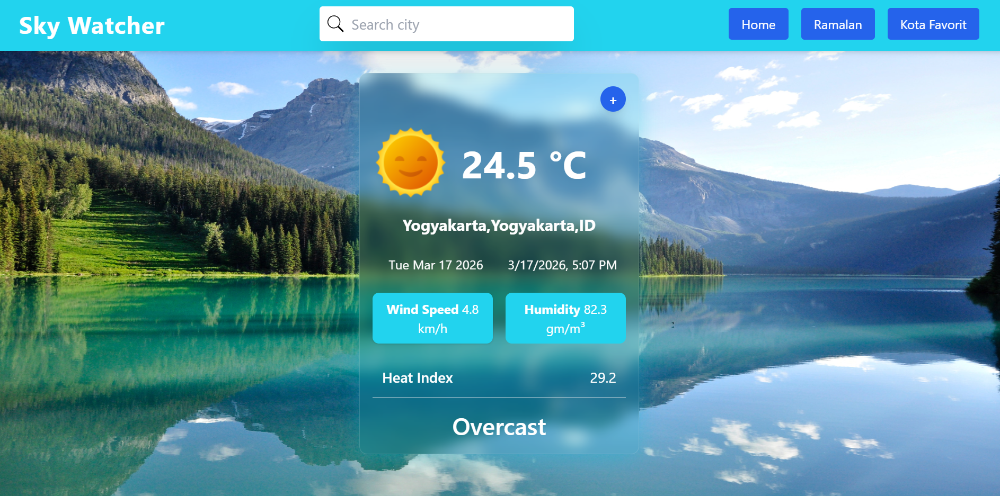
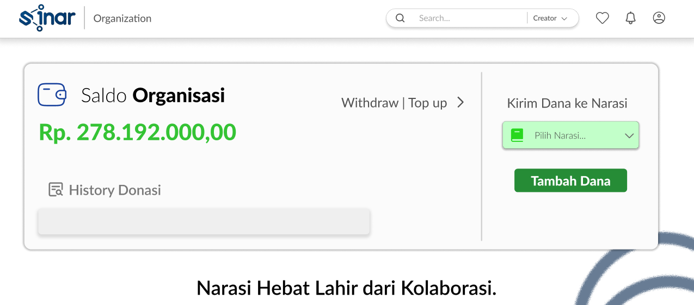

Website belanja online responsif, katalog, dan tombol pemesanan yang terhubung ke whatsapp.

Weather App
Aplikasi cuaca menggunakan Rapid API yang dapat menampilkan informasi cuaca, angin, dan suhu secara real-time.

Manajemen konten digital
website manajemen konten digital merupakan website yang membantu organisasi kemasyarakatan mengelola produksi konten kampanye seperti flyer, video, dan meme dengan melibatkan partisipasi publik.